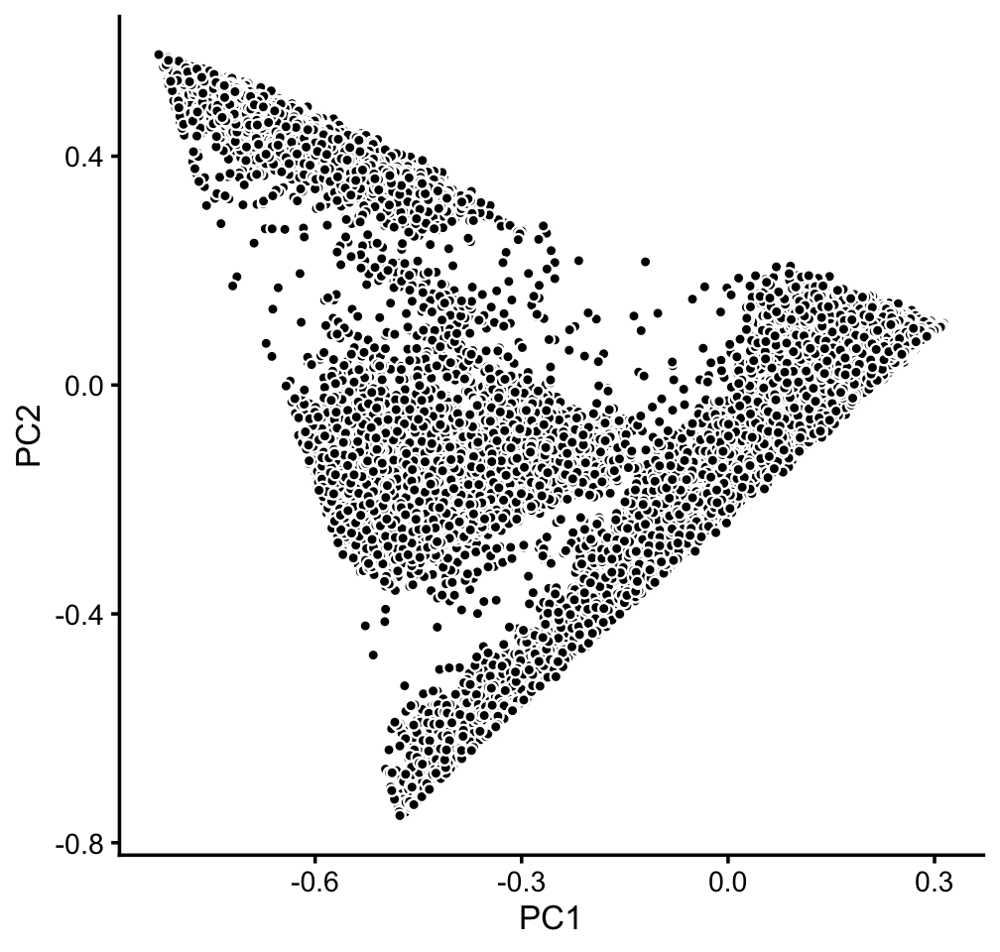
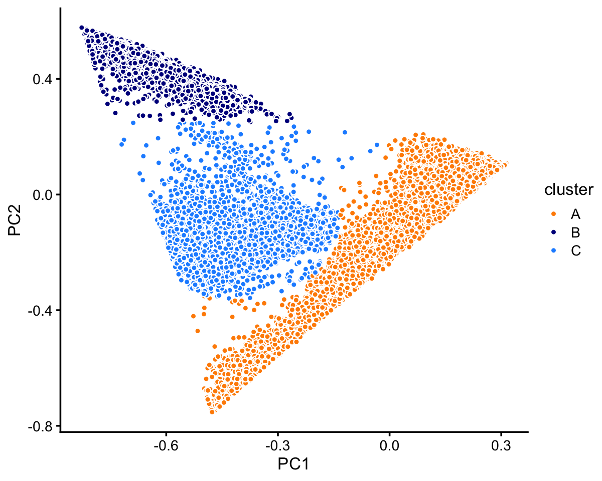
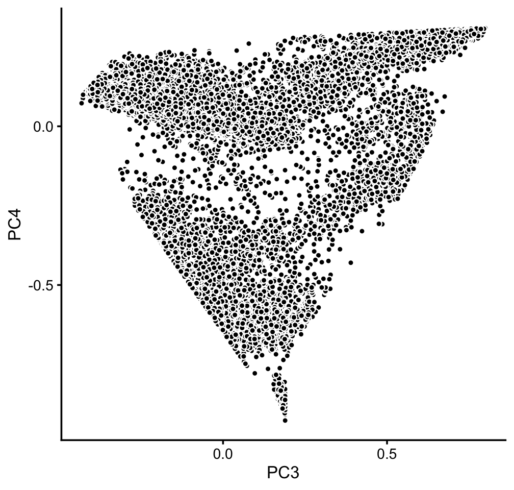
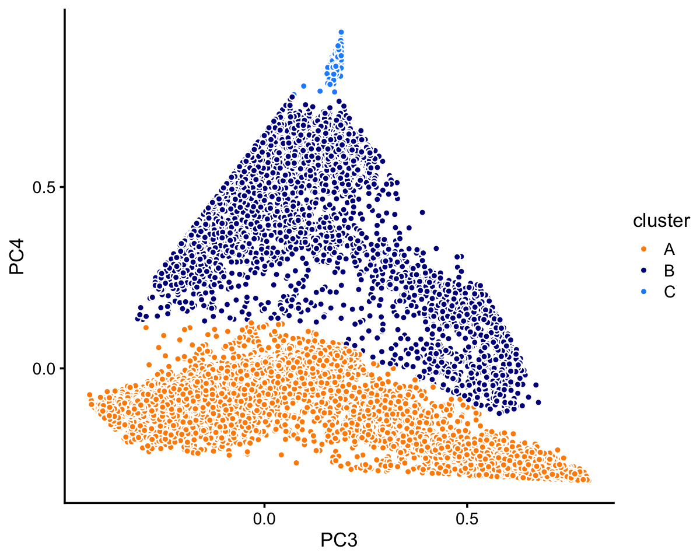

Last updated: 2020-08-20
Checks: 7 0
Knit directory: single-cell-topics/analysis/
This reproducible R Markdown analysis was created with workflowr (version 1.6.2.9000). The Checks tab describes the reproducibility checks that were applied when the results were created. The Past versions tab lists the development history.
Great! Since the R Markdown file has been committed to the Git repository, you know the exact version of the code that produced these results.
Great job! The global environment was empty. Objects defined in the global environment can affect the analysis in your R Markdown file in unknown ways. For reproduciblity it’s best to always run the code in an empty environment.
The command set.seed(1) was run prior to running the code in the R Markdown file. Setting a seed ensures that any results that rely on randomness, e.g. subsampling or permutations, are reproducible.
Great job! Recording the operating system, R version, and package versions is critical for reproducibility.
Nice! There were no cached chunks for this analysis, so you can be confident that you successfully produced the results during this run.
Great job! Using relative paths to the files within your workflowr project makes it easier to run your code on other machines.
Great! You are using Git for version control. Tracking code development and connecting the code version to the results is critical for reproducibility.
The results in this page were generated with repository version 6ec82ca. See the Past versions tab to see a history of the changes made to the R Markdown and HTML files.
Note that you need to be careful to ensure that all relevant files for the analysis have been committed to Git prior to generating the results (you can use wflow_publish or wflow_git_commit). workflowr only checks the R Markdown file, but you know if there are other scripts or data files that it depends on. Below is the status of the Git repository when the results were generated:
Ignored files:
Ignored: data/droplet.RData
Ignored: data/pbmc_68k.RData
Ignored: data/pbmc_purified.RData
Ignored: data/pulseseq.RData
Ignored: output/droplet/fits-droplet.RData
Ignored: output/droplet/rds/
Ignored: output/pbmc-68k/fits-pbmc-68k.RData
Ignored: output/pbmc-68k/rds/
Ignored: output/pbmc-purified/fits-pbmc-purified.RData
Ignored: output/pbmc-purified/rds/
Ignored: output/pulseseq/fits-pulseseq.RData
Ignored: output/pulseseq/rds/
Note that any generated files, e.g. HTML, png, CSS, etc., are not included in this status report because it is ok for generated content to have uncommitted changes.
These are the previous versions of the repository in which changes were made to the R Markdown (analysis/plots_pbmc.Rmd) and HTML (docs/plots_pbmc.html) files. If you’ve configured a remote Git repository (see ?wflow_git_remote), click on the hyperlinks in the table below to view the files as they were in that past version.
| File | Version | Author | Date | Message |
|---|---|---|---|---|
| Rmd | 6ec82ca | Peter Carbonetto | 2020-08-20 | workflowr::wflow_publish(“plots_pbmc.Rmd”) |
| html | 38f07a2 | Peter Carbonetto | 2020-08-20 | A few small revisions to the plots_pbmc analysis. |
| Rmd | fd0316f | Peter Carbonetto | 2020-08-20 | workflowr::wflow_publish(“plots_pbmc.Rmd”) |
| html | 606cd97 | Peter Carbonetto | 2020-08-20 | Added basic PCA plots to plots_pbmc. |
| Rmd | 1b41a60 | Peter Carbonetto | 2020-08-20 | workflowr::wflow_publish(“plots_pbmc.Rmd”) |
| html | d6e5d39 | Peter Carbonetto | 2020-08-20 | Added PCA plot with purified PBMC clustering to plots_pbmc analysis. |
| Rmd | 99301a7 | Peter Carbonetto | 2020-08-20 | workflowr::wflow_publish(“plots_pbmc.Rmd”) |
| Rmd | bf23ca0 | Peter Carbonetto | 2020-08-20 | Added manual labeling of purified PBMC data to plots_pbmc analysis. |
| html | 0c1b570 | Peter Carbonetto | 2020-08-20 | First build on plots_pbmc page. |
| Rmd | eb7f776 | Peter Carbonetto | 2020-08-20 | workflowr::wflow_publish(“plots_pbmc.Rmd”) |
TO DO: Add introductory text here.
Load the packages used in the analysis below.
library(dplyr)
library(fastTopics)
library(ggplot2)
library(cowplot)
source("../code/plots.R")Load the sample annotations. (The count data are no longer needed at this stage of the analysis.)
load("../data/pbmc_purified.RData")
samples_purified <- samples
load("../data/pbmc_68k.RData")
samples_68k <- samples
rm(genes,counts)Load the \(k = 6\) Poisson NMF model fits for both PBMC data sets. To reduce confusion, topics in the fit_68k Poisson NMF model fit are reordered to better align with the topics in fit_purified Poisson NMF model fit.
fit_purified <-
readRDS("../output/pbmc-purified/rds/fit-pbmc-purified-scd-ex-k=6.rds")$fit
fit_68k <- readRDS("../output/pbmc-68k/rds/fit-pbmc-68k-scd-ex-k=6.rds")$fit
cols <- c(1,6,5,3,4,2)
fit_68k$F <- fit_68k$F[,cols]
fit_68k$L <- fit_68k$L[,cols]
colnames(fit_68k$F) <- paste0("k",1:6)
colnames(fit_68k$L) <- paste0("k",1:6)PCs 1 and 2 in mixture of FACS-purified PBMC data:
p1 <- basic_pca_plot(fit_purified,c("PC1","PC2"))
print(p1)
TO DO: Add text here.
pca_purified <- prcomp(poisson2multinom(fit_purified)$L)$x
n <- nrow(pca_purified)
x <- rep("c3",n)
pc1 <- pca_purified[,"PC1"]
pc2 <- pca_purified[,"PC2"]
x[pc1 + 0.2 > pc2] <- "c1"
x[pc2 > 0.25] <- "c2"
x[(pc1 + 0.4)^2 + (pc2 + 0.1)^2 < 0.07] <- "c3"
samples_purified$cluster <- factor(x)PCs 1 and 2 in mixture of FACS-purified PBMC data:
purified_cluster_colors <- c("tomato","dodgerblue","lightskyblue")
p2 <- pca_plot_with_labels(fit_purified,c("PC1","PC2"),
samples_purified$cluster,
purified_cluster_colors) +
labs(fill = "cluster")
print(p2)
| Version | Author | Date |
|---|---|---|
| 38f07a2 | Peter Carbonetto | 2020-08-20 |
Most of the samples are in the first (red) cluster:
print(table(samples_purified$cluster))
#
# c1 c2 c3
# 72614 10439 11602PCs 3 and 4 in 68k PBMC data:
p3 <- basic_pca_plot(fit_68k,c("PC3","PC4"))
print(p3)
TO DO: Add text here.
pca_68k <- prcomp(poisson2multinom(fit_68k)$L)$x
n <- nrow(pca_68k)
x <- rep("c1",n)
pc3 <- pca_68k[,"PC3"]
pc4 <- pca_68k[,"PC4"]
x[pc4 < -0.13 | pc3/2 - 0.17 > pc4] <- "c2"
x[pc4 < -0.75] <- "c3"
samples_68k$cluster <- factor(x)PCs 3 and 4 with the clustering layered on:
pbmc_68k_cluster_colors <- c("cornflowerblue","darkorange","firebrick")
p4 <- pca_plot_with_labels(fit_68k,c("PC3","PC4"),factor(x),
pbmc_68k_cluster_colors) +
labs(fill = "cluster")
print(p4)
The vast majority of the cells are in the first cluster:
table(samples_68k$cluster)
#
# c1 c2 c3
# 63432 4982 165Comparison to Zheng et al (2017) cell-type labeling of the FACS-purified PBMC data:
purified_celltype_colors <-
c("dodgerblue", # CD19+ B
"forestgreen", # CD14+ Monocyte
"lightskyblue",# CD34+
"plum", # CD4+ T Helper2
"slategray", # CD56+ NK
"tomato", # CD8+ Cytotoxic T
"gold", # CD4+/CD45RO+ Memory
"magenta", # CD8+/CD45RA+ Naive Cytotoxic
"darkorange", # CD4+/CD45RA+/CD25- Naive T
"yellowgreen") # CD4+/CD25 T Reg
p4 <- pca_plot_with_labels(fit_purified,c("PC1","PC2"),
samples_purified$celltype,
purified_celltype_colors) + labs(fill = "celltype")
p5 <- pca_plot_with_labels(fit_purified,c("PC4","PC5"),
samples_purified$celltype,
purified_celltype_colors) + labs(fill = "celltype")Loadings plot:
loadings_plot(poisson2multinom(fit_purified),samples_purified$celltype)
loadings_plot(poisson2multinom(fit_68k),samples_68k$celltype)PCA plot:
clrs <- c("forestgreen", # CD14+ Monocyte
"dodgerblue", # CD19+ B
"darkmagenta", # CD34+"
"yellowgreen", # CD4+ T Helper2
"gold", # CD4+/CD25 T Reg
"limegreen", # CD4+/CD45RA+/CD25- Naive T
"orange", # CD4+/CD45RO+ Memory"
"gray", # CD56+ NK
"tomato", # CD8+ Cytotoxic T
"magenta", # CD8+/CD45RA+ Naive Cytotoxic"
"darkblue") # Dendritic"
fit2 <- poisson2multinom(fit)
pca <- prcomp(fit2$L)
pdat <- cbind(samples,pca$x)
ggplot(pdat,aes(x = PC3,y = PC4,fill = celltype)) +
geom_point(shape = 21,color = "white",size = 1.5) +
scale_fill_manual(values = clrs) +
theme_cowplot(font_size = 10)t-SNE plot:
set.seed(1)
p2 <- tsne_plot(fit,n = 8000,num_threads = 4)Differential count analysis:
diff_count_res <- diff_count_analysis(fit,counts)Volcano plots:
p3 <- volcano_plot(diff_count_res,labels = genes$symbol,
label_above_quantile = 0.995)Structure plots:
set.seed(1)
fit2 <- select(poisson2multinom(fit),
loadings = which(samples$celltype == "CD19+ B"))
p4 <- structure_plot(fit2,n = 2000,num_threads = 4) # B-cells.
set.seed(1)
fit2 <- select(poisson2multinom(fit),
loadings = which(samples$celltype == "CD56+ NK"))
p5 <- structure_plot(fit2,n = 2000,num_threads = 4) # NK cells.
set.seed(1)
fit2 <- select(poisson2multinom(fit),
loadings = which(samples$celltype == "CD34+"))
p6 <- structure_plot(fit2,num_threads = 4,perplexity = 50) # CD34+ cells
set.seed(1)
fit2 <- select(poisson2multinom(fit),
loadings = which(samples$celltype == "CD14+ Monocyte"))
p7 <- structure_plot(fit2,num_threads = 4) # CD14+ monocytes
set.seed(1)
fit2 <- select(poisson2multinom(fit),
loadings = which(samples$celltype == "Dendritic"))
p8 <- structure_plot(fit2,num_threads = 4) # dendritic cells
plot_grid(p7,p8,nrow = 2)
set.seed(1)
fit2 <- select(poisson2multinom(fit),
loadings = which(samples$celltype == "CD4+ T Helper2"))
p9 <- structure_plot(fit2,num_threads = 4,perplexity = 30) +
ggtitle("CD4+ T Helper2") +
set.seed(1)
fit2 <- select(poisson2multinom(fit),
loadings = which(samples$celltype == "CD4+/CD45RA+/CD25- Naive T"))
p10 <- structure_plot(fit2,num_threads = 4) +
ggtitle("CD4+/CD45RA+/CD25- Naive T")
set.seed(1)
fit2 <- select(poisson2multinom(fit),
loadings = which(samples$celltype == "CD4+/CD45RO+ Memory"))
p11 <- structure_plot(fit2,num_threads = 4) +
ggtitle("CD4+/CD45RO+ Memory")
set.seed(1)
fit2 <- select(poisson2multinom(fit),
loadings = which(samples$celltype == "CD4+/CD25 T Reg"))
p12 <- structure_plot(fit2,num_threads = 4) +
ggtitle("CD4+/CD25 T Reg")
fit2 <- select(poisson2multinom(fit),
loadings = which(samples$celltype == "CD8+/CD45RA+ Naive Cytotoxic"))
p13 <- structure_plot(fit2,num_threads = 4) +
ggtitle("CD8+/CD45RA+ Naive Cytotoxic")
fit2 <- select(poisson2multinom(fit),
loadings = which(samples$celltype == "CD8+ Cytotoxic T"))
p14 <- structure_plot(fit2,num_threads = 4) +
ggtitle("CD8+ Cytotoxic T")
plot_grid(p9,p10,p11,p12,p13,p14,nrow = 6)Another structure plot:
p15 <- structure_plot(fit,num_threads = 4)
sessionInfo()
# R version 3.6.2 (2019-12-12)
# Platform: x86_64-apple-darwin15.6.0 (64-bit)
# Running under: macOS Catalina 10.15.5
#
# Matrix products: default
# BLAS: /Library/Frameworks/R.framework/Versions/3.6/Resources/lib/libRblas.0.dylib
# LAPACK: /Library/Frameworks/R.framework/Versions/3.6/Resources/lib/libRlapack.dylib
#
# locale:
# [1] en_US.UTF-8/en_US.UTF-8/en_US.UTF-8/C/en_US.UTF-8/en_US.UTF-8
#
# attached base packages:
# [1] stats graphics grDevices utils datasets methods base
#
# other attached packages:
# [1] cowplot_1.0.0 ggplot2_3.3.0 fastTopics_0.3-163 dplyr_0.8.3
#
# loaded via a namespace (and not attached):
# [1] ggrepel_0.9.0 Rcpp_1.0.3 lattice_0.20-38
# [4] tidyr_1.0.0 prettyunits_1.1.1 assertthat_0.2.1
# [7] zeallot_0.1.0 rprojroot_1.3-2 digest_0.6.23
# [10] R6_2.4.1 backports_1.1.5 MatrixModels_0.4-1
# [13] evaluate_0.14 coda_0.19-3 httr_1.4.1
# [16] pillar_1.4.3 rlang_0.4.5 progress_1.2.2
# [19] lazyeval_0.2.2 data.table_1.12.8 irlba_2.3.3
# [22] SparseM_1.78 whisker_0.4 Matrix_1.2-18
# [25] rmarkdown_2.3 labeling_0.3 Rtsne_0.15
# [28] stringr_1.4.0 htmlwidgets_1.5.1 munsell_0.5.0
# [31] compiler_3.6.2 httpuv_1.5.2 xfun_0.11
# [34] pkgconfig_2.0.3 mcmc_0.9-6 htmltools_0.4.0
# [37] tidyselect_0.2.5 tibble_2.1.3 workflowr_1.6.2.9000
# [40] quadprog_1.5-8 viridisLite_0.3.0 crayon_1.3.4
# [43] withr_2.1.2 later_1.0.0 MASS_7.3-51.4
# [46] grid_3.6.2 jsonlite_1.6 gtable_0.3.0
# [49] lifecycle_0.1.0 git2r_0.26.1 magrittr_1.5
# [52] scales_1.1.0 RcppParallel_4.4.4 stringi_1.4.3
# [55] farver_2.0.1 fs_1.3.1 promises_1.1.0
# [58] vctrs_0.2.1 tools_3.6.2 glue_1.3.1
# [61] purrr_0.3.3 hms_0.5.2 yaml_2.2.0
# [64] colorspace_1.4-1 plotly_4.9.2 knitr_1.26
# [67] quantreg_5.54 MCMCpack_1.4-5